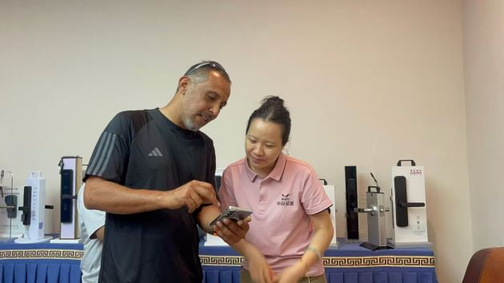

Como um destacado fabricante de fechaduras inteligentes, a WAFU anuncia sua entrada estratégica no crescente mercado de segurança do Irã, atendendo à crescente demanda por serviços de personalização OEM e ODM. A experiência da empresa como fornecedor de fechaduras inteligentes possibilita soluções personalizadas, incluindo configurações de fechaduras invisíveis e fechaduras remotas para parceiros B2B iranianos.

Expansão B2B: Fabricante de Fechaduras Inteligentes Entra em um Mercado Estratégico
A entrada da WAFU no Irã representa um passo significativo em sua expansão global como fabricante profissional de fechaduras inteligentes. As amplas capacidades OEM/ODM da empresa são especialmente atrativas para distribuidores iranianos, empresas de segurança e incorporadoras que buscam parcerias confiáveis com um fornecedor de fechaduras inteligentes.
“Nossa posição como um fabricante de fechaduras inteligentes experiente nos permite oferecer serviços OEM excepcionais adaptados às necessidades específicas do mercado iraniano”, explicou o Diretor de Negócios Internacionais. “Desde designs de fechaduras invisíveis até sistemas avançados de fechaduras remotas, nossas soluções ODM oferecem total flexibilidade para parceiros B2B.”
Portfólio Abrangente de Serviços OEM & ODM
Como um fornecedor completo de fechaduras inteligentes, a WAFU oferece amplas opções de personalização:
- Fabricação OEM Completa: Produção white-label com a marca do parceiro para distribuidores que desejam suas próprias linhas de produtos
- Desenvolvimento ODM Avançado: Designs personalizados de fechaduras invisíveis e fechaduras remotas desenvolvidos especificamente para as necessidades do mercado iraniano
- Serviços de Adaptação Técnica: Modificações em linhas de produtos existentes para atender padrões e preferências locais
- Atendimento a Pedidos em Lote: Capacidade de produção escalável para grandes pedidos B2B
Soluções Especializadas para Parceiros B2B no Irã
Os serviços OEM/ODM da empresa incluem diversas categorias de produtos especializados:
- Sistemas Personalizados de Fechaduras Invisíveis: Como um importante fabricante de fechaduras invisíveis, a WAFU oferece soluções discretas que preservam a estética da porta sem comprometer a segurança
- Tecnologia de Fechaduras Remotas: Sistemas avançados de fechaduras remotas com opções de conectividade adaptadas à infraestrutura de rede do Irã
- Soluções de Segurança Híbrida: Sistemas combinados que integram múltiplas tecnologias para maior proteção
- Designs Adaptados ao Clima: Produtos projetados especificamente para as condições ambientais do Irã
Capacidades de Fabricação e Garantia de Qualidade
Com instalações de fabricação de última geração, a WAFU garante qualidade consistente em todos os projetos OEM e ODM:
Linhas de Produção Avançadas
Linhas de produção altamente escaláveis projetadas para atender grandes volumes de pedidos, garantindo entregas consistentes para projetos B2B de grande escala.
Padrões de Controlo de Qualidade
Protocolos rigorosos de testes que atendem aos padrões internacionais de segurança
Capacidades de P&D
Equipe de pesquisa dedicada ao desenvolvimento de soluções personalizadas de fechaduras inteligentes
Oportunidades de Parceria para Empresas Iranianas
A WAFU busca estabelecer parcerias de longo prazo com empresas iranianas através de diversos modelos de cooperação:
- Parcerias Exclusivas de Distribuição: Para empresas que desejam representar a WAFU como um fornecedor premium de fechaduras inteligentes em regiões específicas
- Acordos de Fabricação OEM: Produção personalizada sob as marcas dos parceiros
- Licenciamento de Tecnologia: Acesso às tecnologias patenteadas de fechaduras invisíveis e fechaduras remotas
- Desenvolvimento Conjunto de Produtos: Projetos ODM colaborativos voltados para segmentos de mercado específicos
Serviços de Personalização Específicos para o Mercado
A experiência da empresa em OEM/ODM abrange diversas adaptações específicas do mercado:
Conformidade Técnica
Ajustes para atender aos padrões e regulamentos técnicos do Irã
Personalização de Embalagens
Embalagens e documentação específicas da marca para parceiros B2B
Suporte à Cadeia de Suprimentos e Logística
Como um confiável fabricante de fechaduras inteligentes, a WAFU oferece suporte logístico completo:
- Suporte à gestão de inventário para distribuidores
- Documentação técnica em vários idiomas
- Suporte ao desenvolvimento de redes de pós-venda
Planos de Desenvolvimento Futuro
“Nosso compromisso como fornecedor de fechaduras inteligentes vai além da entrada inicial no mercado”, acrescentou o Diretor de Negócios Internacionais. “Planejamos estabelecer centros locais de suporte técnico e continuar expandindo nossas capacidades OEM/ODM para atender melhor os parceiros iranianos. A demanda por soluções de fechaduras invisíveis e tecnologia avançada de fechaduras remotas mostra um potencial de crescimento significativo neste mercado.”
“Como um fabricante de fechaduras inteligentes experiente, entendemos que parcerias B2B bem-sucedidas exigem mais do que produtos — exigem soluções OEM/ODM completas que atendam às necessidades específicas do mercado. Nossa entrada no Irã representa nosso compromisso em ser um fornecedor de fechaduras inteligentes confiável para este mercado importante.”
A expansão da WAFU para o Irã representa um movimento estratégico para aproveitar a crescente demanda por soluções de segurança avançadas. Ao utilizar sua experiência como fabricante de fechaduras inteligentes com fortes capacidades OEM e ODM, a empresa está bem posicionada para se tornar um importante fornecedor de fechaduras inteligentes na região, oferecendo soluções especializadas, incluindo sistemas de fechaduras invisíveis e fechaduras remotas adaptados às necessidades locais.